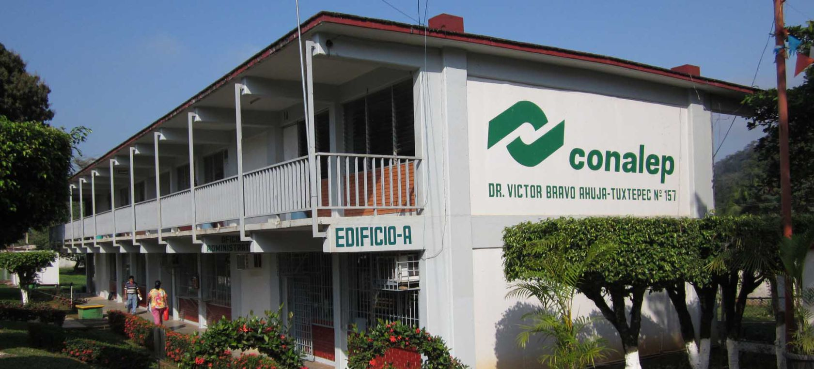

Creación del Colegio Estatal
En el año de 1999 fue firmado el Convenio de Coordinación para la Federalización de los Servicios de Educación Profesional Técnica suscrito por las Secretarias de Educación Pública, Hacienda y Crédito Público y Desarrollo Administrativo así como el Colegio Nacional de Educación Profesional Técnica y el Gobernador del Estado de Veracruz.
En el año 2000 fue creado el Colegio de Educación Profesional Técnica del Estado de Veracruz (Conalep estado de Veracruz), publicándose por parte del ejecutivo Estatal el decreto de creación del Organismo Público Descentralizado en la Gaceta Oficial del Estado en agosto 28 de ese mismo año.
El Colegio de Educación Profesional Técnica del Estado de Veracruz – Llave (CONALEP – Veracruz), es un Organismo Público Descentralizado del Gobierno del Estado cuyo objetivo es contribuir al desarrollo estatal y municipal mediante la formación de personal calificado de nivel profesional técnico, con estudios complementarios para el acceso al nivel superior y la capacitación laboral, conforme a los requerimientos y necesidades del sector productivo y la superación profesional del individuo. Somos parte del Sistema Nacional de Colegios de Educación Profesional Técnica.
El Colegio de Educación Profesional Técnica del Estado de Veracruz, cuenta con una Dirección General, Localizada en la ciudad de Xalapa, 13 planteles ubicados en: Coatzacoalcos, Carlos A. Carillo, San Andrés Tuxtla, Juan Díaz Covarrubias, Papantla, Tuxpan de Rodríguez Cano, Xalapa, Orizaba, Potrero, Poza Rica, Veracruz y Emilio Carranza, además de un Centro de Asistencia y Servicios Tecnológicos (CAST) localizado en Coatzacoalcos.
<